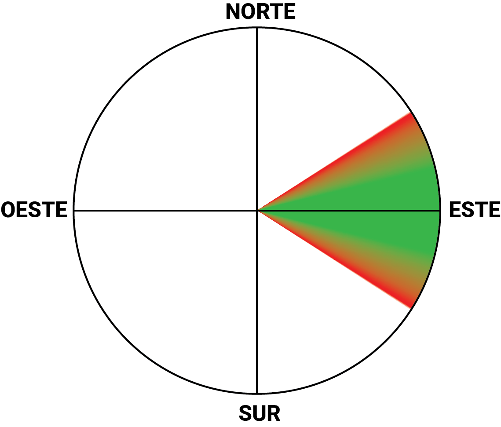
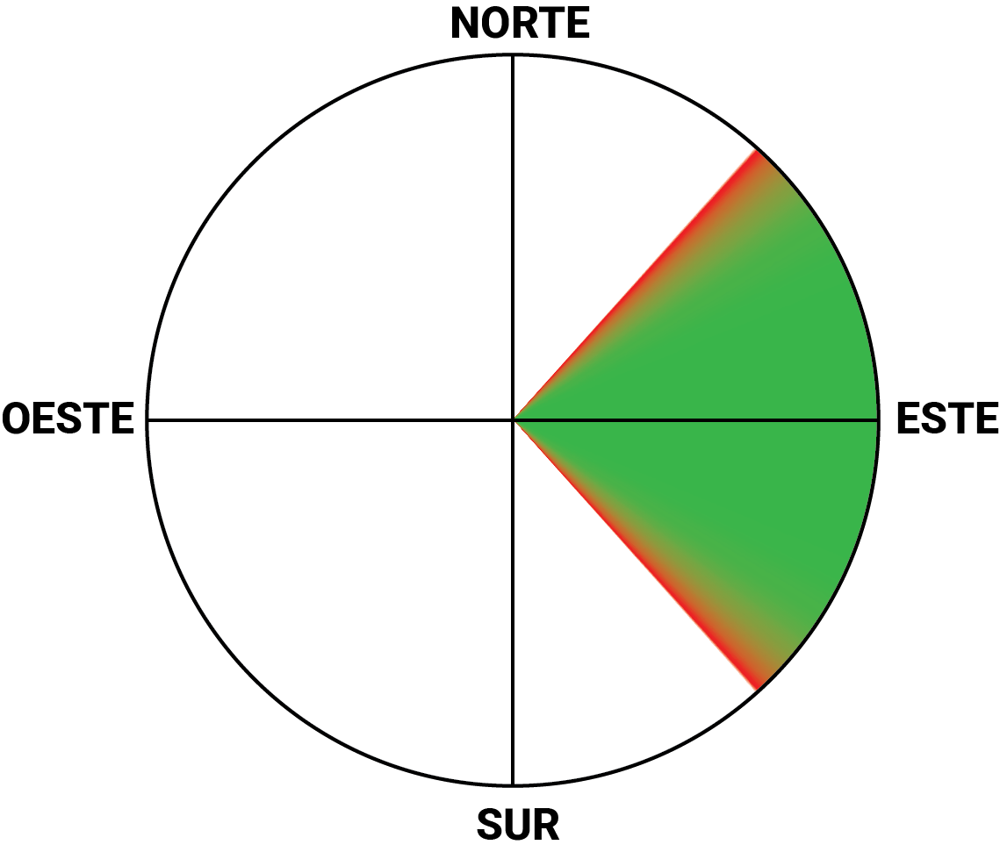
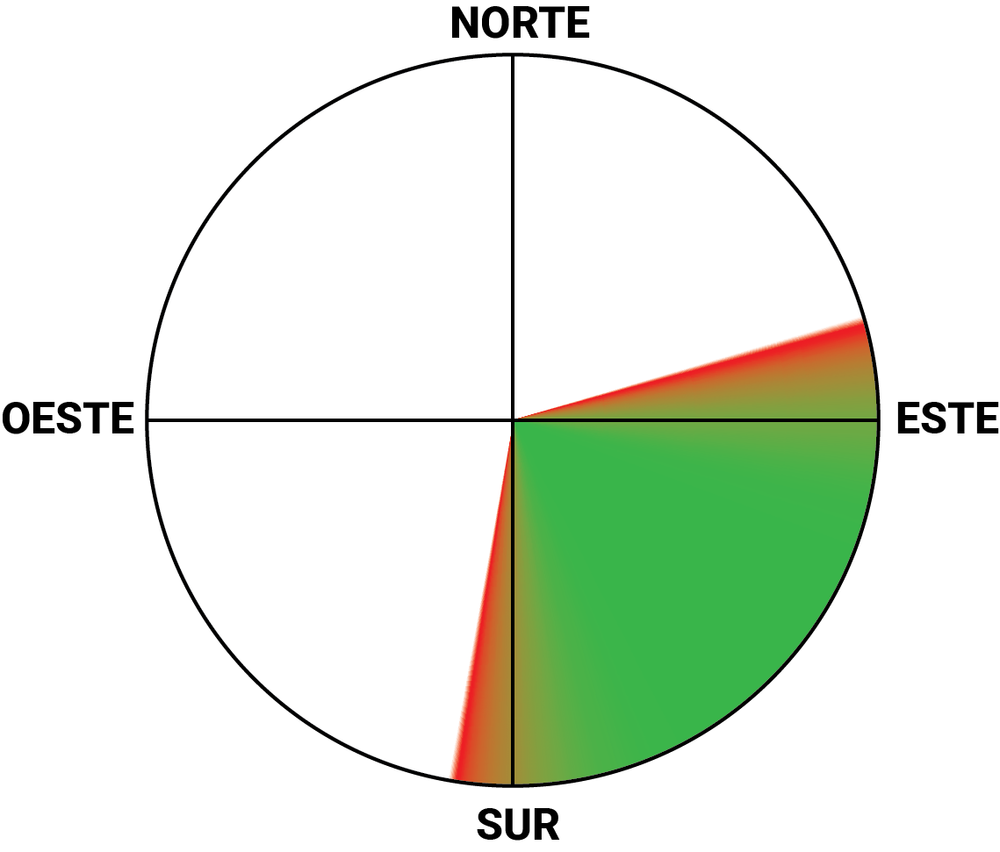
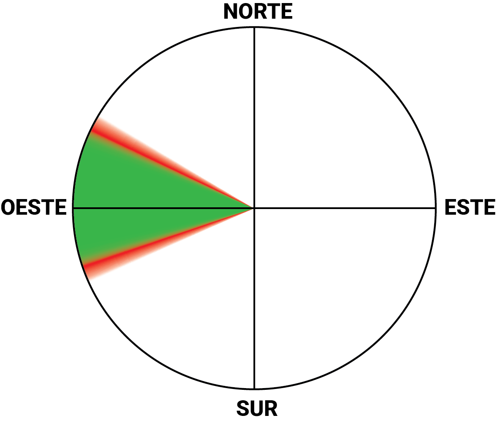
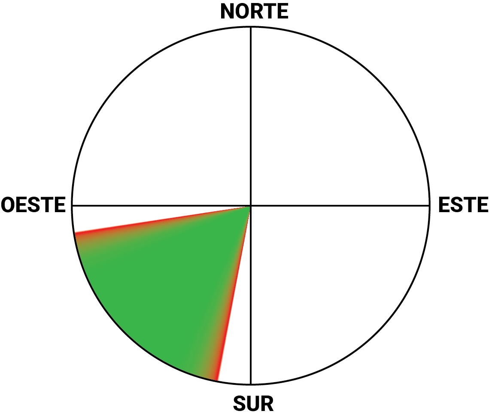
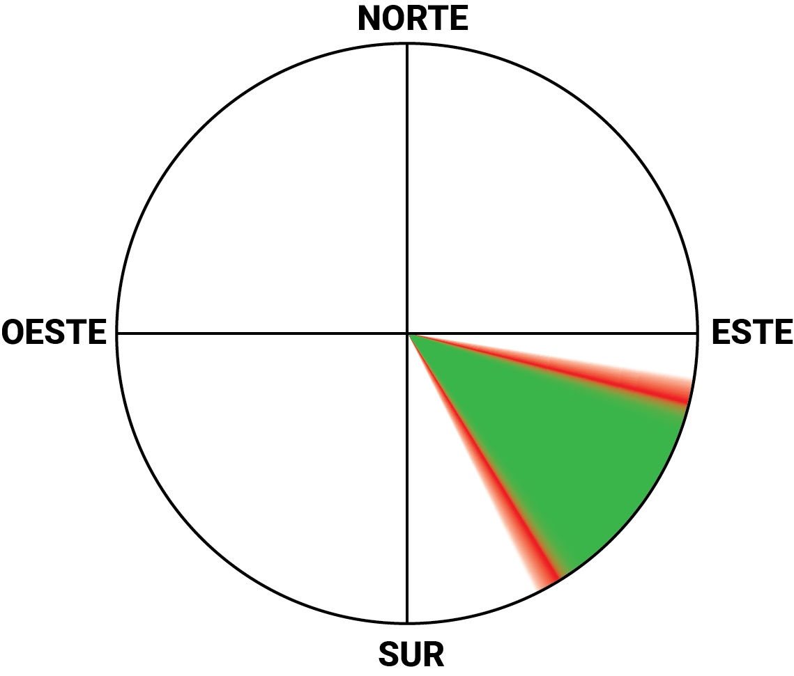
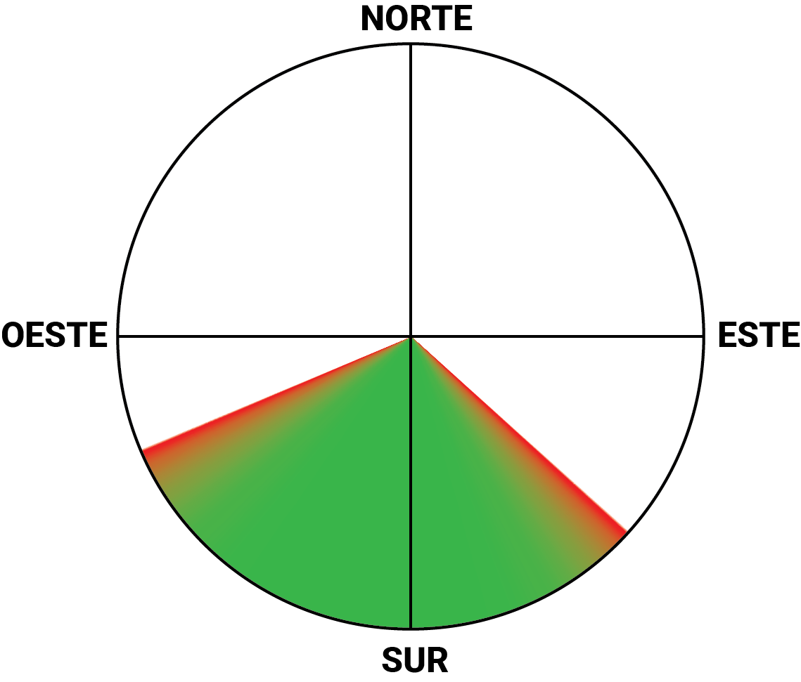
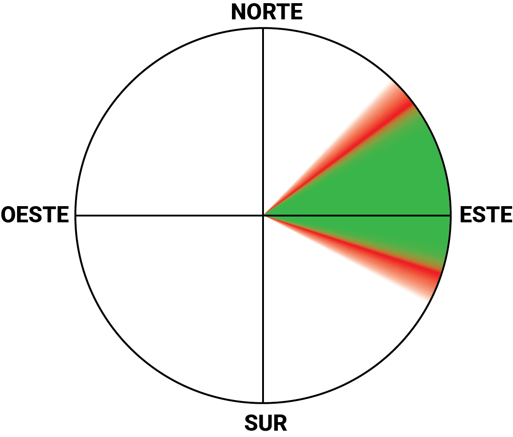

Tapalpa
Tapalpa
Las Antenas
Nivel—
Altura2,208 msnm
VientoSin datos
CoordenadasN 19.93942° O 103.65272° · Ver en Google Maps →
Acceso—
Operado por—
Contactos—

Tapalpa
Gravedad Cero
Nivel—
Altura2,212 msnm
VientoNoreste – Este (bueno), Sureste (posible)
CoordenadasN 19.9422° O 103.654° · Ver en Google Maps →
Acceso—
Operado por—
Contactos—

Tapalpa · Ladera
La Ceja
NivelPG Intermedio, HG Avanzado
Altura2,180 msnm
VientoEste – Sureste – Sur
CoordenadasN 19.93559° O 103.65375° · Ver en Google Maps →
AccesoCualquier tipo de vehículo
Operado porAventuras La Ceja
ContactosJuan Carlos Madrigal +52-341-108-9337 · Diego Vásquez +52-33-3903-2373

Tapalpa · Ladera
Aterrizaje Los Papalotes
NivelPG Intermedio, HG Avanzado
Altura2,180 msnm
VientoEste – Sureste – Sur
CoordenadasN 19.93559° O 103.65375° · Ver en Google Maps →
AccesoCualquier tipo de vehículo
Operado por—
ContactosJuan Carlos Madrigal +52-341-108-9337 · Diego Vásquez +52-33-3903-2373
Jalisco
Jalisco
El Chante
Nivel—
Altura2,043 msnm
VientoSin datos
CoordenadasN 20.3067° O 103.393° · Ver en Google Maps →
Acceso—
Operado por—
Contactos—
Jalisco
Tepa-trepa
Nivel—
Altura2,369 msnm
VientoOeste (posible)
CoordenadasN 20.7615° O 102.61° · Ver en Google Maps →
Acceso—
Operado por—
Contactos—
Jalisco
Atotonilco
Nivel—
Altura2,091 msnm
VientoSuroeste (bueno), Sur (posible)
CoordenadasN 20.5593° O 102.554° · Ver en Google Maps →
Acceso—
Operado por—
Contactos—
Jalisco
Mazamitla
Nivel—
Altura—
VientoSin datos
Coordenadas—
Acceso—
Operado por—
Contactos—
Costa · Puerto Vallarta
Conchas Chinas
Nivel—
Altura131 msnm
VientoSuroeste (bueno), Sureste – Sur (posible)
CoordenadasN 20.581° O 105.238° · Ver en Google Maps →
Acceso—
Operado por—
Contactos—
Resto de México
Red en construcción — sitios registrados en ParaglidingEarth fuera de Jalisco. Fichas básicas por ahora; iremos sumando datos de acceso y contacto local.
Estado de México
Valle de Bravo · La Torre
Nivel—
Altura2,166 msnm
VientoOeste (bueno), Suroeste – Noroeste (posible)
CoordenadasN 19.1846° O 100.114° · Ver en Google Maps →
Acceso—
Operado por—
Contactos—

Estado de México
Valle de Bravo · El Peñón
Nivel—
Altura2,336 msnm
VientoSur – Suroeste – Oeste (bueno), Norte – Sureste – Noroeste (posible)
CoordenadasN 19.0616° O 100.091° · Ver en Google Maps →
AccesoLa Albarrada, Valle de Bravo, Estado de México
Operado porClub Peñón
Contactos—

Aguascalientes
Picacho
Nivel—
Altura2,348 msnm
VientoEste (bueno), Noreste – Sureste (posible)
CoordenadasN 21.8774° O 102.422° · Ver en Google Maps →
Acceso—
Operado por—
Contactos—

Colima
La Cumbre
NivelIntermedio (EN B) en adelante · principiantes solo con instructor
Altura770 msnm despegue · 390 msnm aterrizaje (desnivel 380 m)
VientoSureste (bueno), Sur – Suroeste (posible) · mejor entre 10:00–13:00 h
CoordenadasN 19.1813° O 103.692° · Ver en Google Maps →
Acceso7.5 km al sur de Colima por la carretera Colima–Jiquilpan + 3.5 km de camino empedrado; autos pequeños llegan al despegue
Operado porParapente Colima
ContactosFacebook · @parapente.colima · Instructor Benjamín Silva (cert. AVLM) @benjamin.anda.volando

Oaxaca
Zaachila
Nivel—
Altura2,314 msnm
VientoNoreste – Este – Sureste (bueno), Norte – Sur (posible)
CoordenadasN 16.9328° O 96.8532° · Ver en Google Maps →
Acceso—
Operado por—
Contactos—
